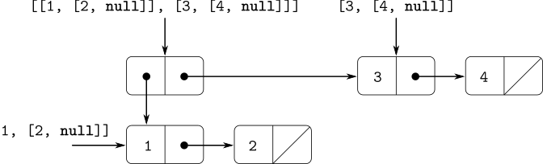

pair(list(1, 2), list(3, 4));

const x = pair(list(1, 2), list(3, 4));
length(x);
3
count_leaves(x);
4
list(x, x);
list(list(list(1, 2), 3, 4), list(list(1, 2), 3, 4))
length(list(x, x));
2
count_leaves(list(x, x));
8
function count_leaves(x) {
return is_null(x)
? 0
: ! is_pair(x)
? 1
: count_leaves(head(x)) + count_leaves(tail(x));
}
[1, [[2, [[3, [4, null]], null]], null]]
list(1, 3, list(5, 7), 9) list(list(7)) list(1, list(2, list(3, list(4, list(5, list(6, 7))))))
head(tail(head(tail(tail(the_first_list)))));
head(head(the_second_list));
head(tail(head(tail(head(tail(head(tail(head(
tail(head(tail(the_third_list))))))))))));const x = list(1, 2, 3); const y = list(4, 5, 6);
append(x, y)
pair(x, y)
list(x, y)
[1, [2, [3, [4, [5, [6, null]]]]]]
[[1, [2, [3, null]]], [4, [5, [6, null]]]]
[[1, [2, [3, null]]], [[4, [5, [6, null]]], null]]
const x = list(list(1, 2), list(3, 4));
x;
list(list(1, 2), list(3, 4))
reverse(x);
list(list(3, 4), list(1, 2))
deep_reverse(x);
list(list(4, 3), list(2, 1))
function deep_reverse(items){
return is_null(items)
? null
: is_pair(items)
? append(deep_reverse(tail(items)),
pair(deep_reverse(head(items)),
null))
: items;
}
const x = list(list(1, 2), list(3, 4));
fringe(x);
list(1, 2, 3, 4)
fringe(list(x, x));
list(1, 2, 3, 4, 1, 2, 3, 4)
function fringe(x) {
return is_null(x)
? null
: is_pair(x)
? append(fringe(head(x)), fringe(tail(x)))
: list(x);
}
function make_mobile(left, right) {
return list(left, right);
}
function make_branch(length, structure) {
return list(length, structure);
}
function make_mobile(left, right) {
return pair(left, right);
}
function make_branch(length, structure) {
return pair(length, structure);
}
function left_branch(m) {
return head(m);
}
function right_branch(m) {
return head(tail(m));
}
function branch_length(b) {
return head(b);
}
function branch_structure(b) {
return head(tail(b));
}
function is_weight(x){
return is_number(x);
}
function total_weight(x) {
return is_weight(x)
? x
: total_weight(branch_structure(
left_branch(x))) +
total_weight(branch_structure(
right_branch(x)));
}
function is_balanced(x) {
return is_weight(x) ||
( is_balanced(branch_structure(
left_branch(x))) &&
is_balanced(branch_structure(
right_branch(x))) &&
total_weight(branch_structure(
left_branch(x)))
* branch_length(left_branch(x))
===
total_weight(branch_structure(
right_branch(x)))
* branch_length(right_branch(x))
);
}
function left_branch(m) {
return head(m);
}
function right_branch(m) {
return tail(m);
}
function branch_length(b) {
return head(b);
}
function branch_structure(b) {
return tail(b);
}
function scale_tree(tree, factor) {
return is_null(tree)
? null
: ! is_pair(tree)
? tree * factor
: pair(scale_tree(head(tree), factor),
scale_tree(tail(tree), factor));
}
scale_tree(list(1, list(2, list(3, 4), 5), list(6, 7)),
10);
list(10, list(20, list(30, 40), 50), list(60, 70))
function scale_tree(tree, factor) {
return map(sub_tree => is_pair(sub_tree)
? scale_tree(sub_tree, factor)
: sub_tree * factor,
tree);
}
square_tree(list(1,
list(2, list(3, 4), 5),
list(6, 7)));
list(1, list(4, list(9, 16), 25), list(36, 49)))
function square_tree(tree) {
return is_null(tree)
? null
: ! is_pair(tree)
? square(tree)
: pair(square_tree(head(tree)),
square_tree(tail(tree)));
}
[1, [[4, [[9, [16, null]], [25, null]]], [[36, [49, null]], null]]]
function square_tree(tree) {
return map(sub_tree => ! is_pair(sub_tree)
? square(sub_tree)
: square_tree(sub_tree),
tree);
}
[1, [[4, [[9, [16, null]], [25, null]]], [[36, [49, null]], null]]]
function square_tree(tree) { return tree_map(square, tree); }
function tree_map(f, tree) {
return map(sub_tree => is_null(sub_tree)
? null
: is_pair(sub_tree)
? tree_map(f, sub_tree)
: f(sub_tree),
tree);
}
[1, [[4, [[9, [16, null]], [25, null]]], [[36, [49, null]], null]]]
list(null, list(3), list(2), list(2, 3),
list(1), list(1, 3), list(1, 2),
list(1, 2, 3))function subsets(s) {
if (is_null(s)) {
return list(null);
} else {
const rest = subsets(tail(s));
return append(rest, map(x => pair(head(s), x), rest));
}
}
[ null,
[ [3, null],
[ [2, null],
[ [2, [3, null]],
[ [1, null],
[ [1, [3, null]],
[ [1, [2, null]],
[[1, [2, [3, null]]], null]
]
]
]
]
]
]
]